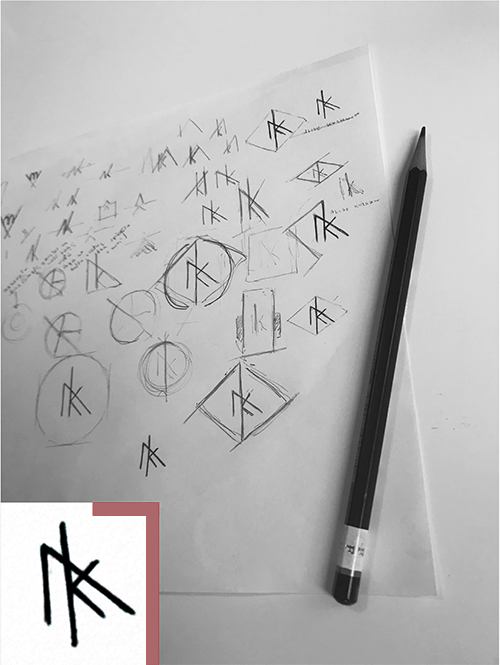

When creating my logo, I didn’t think about any particular style of art- the only preconditions I set when I started to sketch, was that I wanted it to be simple, easy to understand and without any unnecessary details, so it is legible not only in big, but also in really small sizes.Two letters in the logo stands for my name and surname, that i also chose as my domain name.
